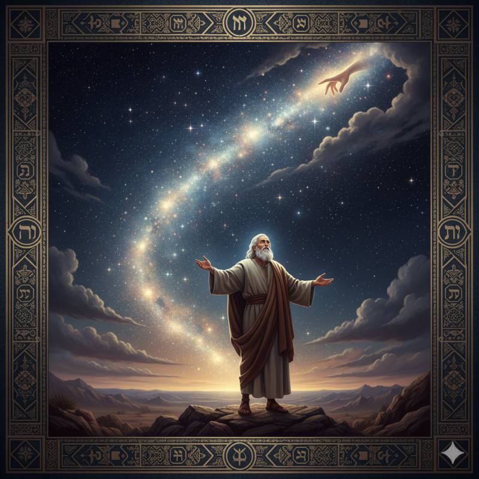
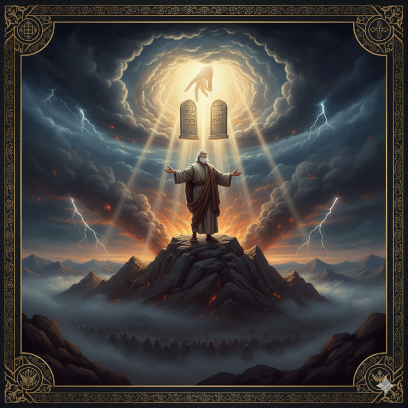

성경 전체를 꿰뚫는 하나의 열쇠, '언약' 혹시 성경을 읽으면서 창세기부터 요한계시록까지의 방대한 이야기가 어떻게 하나로 연결되는지 궁금했던 적 없으신가요? 구약의 제사법과 신약의 복음은 어떤 관계일까요? 마치 흩어진 구슬처럼 보이는 성경의 이야기들을 하나의 실로 꿰어낼 수 있는 열쇠가 있습니다. 바로 '언약(Covenant)'이라는 해석의 틀입니다.
우리는 모두 세상을 바라보는 자신만의 '안경', 즉 관점과 세계관을 가지고 살아갑니다. 신앙생활도 마찬가지입니다. '언약'이라는 안경을 통해 성경을 보면, 하나님의 위대한 구원 계획이 얼마나 일관성 있고 장엄하게 펼쳐지는지 깨닫게 됩니다. 이 글을 통해 성경을 해석하는 가장 중요한 틀인 '언약'에 대해 알아보도록 하겠습니다. 1. 언약이란 무엇인가? : 단순한 약속 그 이상 우리가 흔히 생각하는 '약속'보다 언약은 훨씬 더 깊고 엄중한 개념입니다. 언약은 '구속력을 지닌 공식적인 협정(Binding Agreement)'입니다. 고대 근동 지방에서는 강대국의 왕(종주)이 속국의 왕(봉신)과 '종주-봉신 조약'을 맺어 관계를 설정했습니다. 하나님께서는 당시 사람들이 이해할 수 있었던 이 '언약'의 개념을 사용해, 보이지 않는 하나님과 인간의 관계를 설명해 주셨습니다. 언약은 하나님과 우리 사이의 관계를 규정하는 공식적인 틀이며, 성경은 바로 이 하나님과 인간 사이의 언약 이야기입니다. 성경이 '구약(Old Testament)'과 '신약(New Testament)'으로 나뉘는 이유도 바로 여기에 있습니다. Testament는 언약을 의미합니다. 2. 모든 이야기의 시작 : 행위 언약과 은혜 언약 성경의 모든 이야기는 크게 두 가지 언약을 중심으로 전개됩니다. 1) 창조 언약 (행위 언약)하나님은 첫 사람 아담을 온 인류의 대표(Federal Head)로 세우시고 언약을 맺으셨습니다. 그 언약은 에덴동산의 모든 것을 누리되, 선악을 알게 하는 나무의 열매는 먹지 말라는 것이었습니다. 이는 '선과 악의 기준은 창조주인 나에게 있다'는 하나님의 주권에 순종하라는 요구였습니다. 만약... 아담이 이 언약에 순종했다면, 그와 그의 후손인 온 인류는 영원한 생명을 얻었을 것입니다. 하지만 안타깝게도 아담은 불순종했고, 인류의 대표였던 그의 죄는 온 인류에게 영향을 미치게 되었습니다.
이것이 바로 로마서 5장 12절이 말하는 “그러므로 한 사람으로 말미암아 죄가 세상에 들어오고 죄로 말미암아 사망이 들어왔나니 이와 같이 모든 사람이 죄를 지었으므로 사망이 모든 사람에게 이르렀느니라” 즉, '한 사람의 범죄로 많은 사람이 죄인이 된 것'의 의미입니다. 2) 은혜 언약 인류가 스스로의 힘으로는 구원받을 수 없게 되자, 하나님은 두 번째 길을 열어주셨습니다. 이것이 바로 '은혜 언약'입니다. 하나님께서 친히 구원자를 보내주시겠다는 약속입니다. 창세기 3장 15절과 21절에서 “내가 너로 여자와 원수가 되게 하고 네 후손도 여자의 후손과 원수가 되게 하리니 여자의 후손은 네 머리를 상하게 할 것이요 너는 그의 발꿈치를 상하게 할 것이요 너는 그의 발꿈치를 상하게 할 것이니라 하시고” “여호와 하나님이 아담과 그의 아내를 위하여 가죽옷을 지어 입히시니라” 이처럼 '여자의 후손과 원수가 되게 하신다'는 말씀과 '가죽 옷'을 통해 암시된 은혜 언약은, 구약 전체를 거쳐 점진적으로 구체화되고 마침내 예수 그리스도를 통해 완성됩니다. 성경의 나머지 부분은 바로 이 하나의 '은혜 언약'이 어떻게 시대 속에서 펼쳐지고 성취되는지에 대한 장엄한 드라마입니다. 3. 점진적으로 드러나는 하나님의 구원 계획 은혜 언약은 여러 시대에 걸쳐 다양한 인물들과의 언약을 통해 그 모습을 드러냅니다. 이는 완전히 새로운 언약이 아니라, 하나의 약속이 점점 더 선명해지는 '확대 증보판'과 같습니다.
노아 언약은 죄로 가득한 세상을 홍수로 심판하신 후, 하나님은 무지개를 증표로 다시는 물로 세상을 멸하지 않겠다는 '보존 언약'을 맺으십니다. 이는 인류를 위한 구원의 무대를 보존하시겠다는 하나님의 은혜였습니다.

아브라함 언약은 하나님이 자식 없던 아브라함에게 하늘의 별과 같이 많은 자손을 약속하시며, 그의 후손을 통해 천하 만민이 복을 얻을 것이라 약속하십니다. 아브라함과 하나님의 언약은 믿지 못하는 아브라함을 위해하나님이 제안하신 일방적인 언약이며,당시의 언약의 문화인 동물을 반으로 갈라 쪼갠 사이로 하나님 홀로 지나가시는 의식은, 이 언약이 인간의 행위가 아닌 하나님의 신실하심에 달려있음을 보여줍니다.

모세 언약(시내산 언약)은 애굽에서 종살이하던 이스라엘을 구원하신 하나님은, 시내산에서 그들을 '제사장 나라'와 '거룩한 백성'으로 삼는 언약을 맺으십니다. 이때 주신 율법(십계명, 제사법 등)은 구원의 조건이 아니라, 이미 구원받은 백성이 어떻게 살아가야 하는지에 대한 '삶의 설명서'였습니다. 특히 제사법은 인간이 죄인이며, 누군가의 피 흘리는 희생을 통해 용서받을 수 있다는 ‘은혜'를 가르쳐주었습니다.
다윗 언약에서는 하나님은 다윗에게 그의 왕위가 영원할 것이라고 약속하십니다. 이는 장차 오실 영원한 왕, 예수 그리스도를 가리키는 예언이었습니다. 그리고이스라엘 백성이 계속해서 언약을 어기고 우상숭배에 빠져 심판 즉, 북이스라엘과 남유다로 나뉘고, 여전히 계속 범죄하고 회개하고 돌이키지 않아 이스라엘은 결국 멸망하고 바벨론에 포로로 잡혀가 70년이나 종살이를 하게 됩니다. 이러한 심판을 받은 후, 하나님은 예레미야 선지자를 통해 '새 언약'을 예고하십니다. 돌 판이 아닌 마음에 하나님의 법을 새기고, 완전한 용서를 주시겠다는 놀라운 약속입니다. 4. 복음의 심장 : 예수 그리스도와 새 언약의 성취 마침내 때가 되어 이 땅에 오신 예수님은 이 모든 언약의 완성자이십니다. 예수님은 두 번째 대표(Federal Head)로서, 아담이 실패했던 '행위 언약'을 완벽하게 순종하여 하나님의 모든 뜻을 이루셨습니다. 예수님은 십자가에서 자신의 피로 '새 언약'을 체결하셨습니다. 그분 자신이 유월절 어린 양이자 영원한 희생 제물이 되심으로, 구약의 모든 제사가 가리켰던 실체가 되어주셨습니다. 우리가 드리는 성찬식은 바로 이 새 언약을 기념하는 '언약 만찬'입니다. 이것이 바로 '전가(imputation)'라는 놀라운 진리입니다. 아담의 죄가 우리에게 넘어왔듯, 예수님의 완전한 의(義)가 그를 믿는 우리에게 선물로 주어집니다. 우리는 자격이 없지만, 하나님께서 예수님 때문에 우리에게 "너는 의롭다"라는 명찰을 붙여주신 것처럼말입니다. 우리의 구원은 내 안에 의로움이 '주입(infusion)'되어 조금씩 쌓아가는 것이 아니라, 예수님의 의의 옷을 단번에 '덧입는' 것입니다. 그래서 우리는 구원의 확신(영원한 안전, eternal security)을 가질 수 있습니다. 결론 : 감격과 황송함으로 살아가는 삶 '언약'이라는 안경으로 성경을 보니 어떻습니까? 창세기부터 계시록까지 흩어져 있던 퍼즐 조각들이 '예수 그리스도 안에서 성취된 하나님의 신실한 약속'이라는 큰 그림으로 맞춰지는 것을 볼 수 있습니다. 이 진리를 깨닫게 될 때, 우리의 신앙은 '구원받기 위해' 무언가를 하는.... 행위 중심에서 벗어나게 됩니다. 대신, 자격 없는 나에게 베풀어주신 하나님의 은혜가 너무나 크고 황송해서, 그저 감사와 감격으로 하나님을 사랑하고 그분의 뜻대로 살고 싶어지는 삶으로 변화됩니다. 오늘부터 '언약'이라는 열쇠로 성경을 읽어보십시오. 페이지마다 당신을 향한 하나님의 신실하신 사랑과 위대한 구원의 이야기가 새롭게 다가올 것입니다.